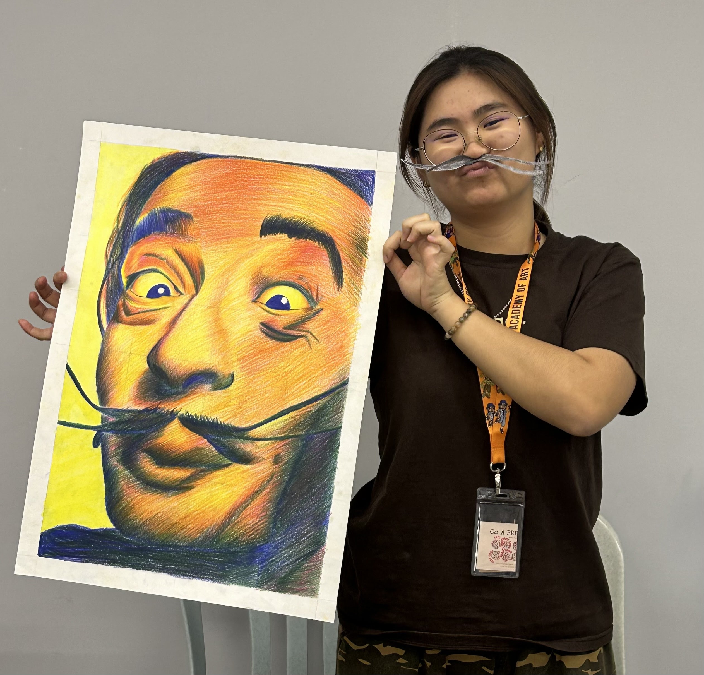

“One cannot think well, love well, sleep well, if one has not dined well.” ― Virginia Woolf, A Room of One’s Own
HALOOOOOO EVERYBODY!!! I'm Kelly, and I'm currently 20 years old. I study at Dasein Academy of Art, pursuing a Diploma in Digital Media Design. I was born in Miri, Sarawak. I live on treesssssssss......... I have to climb SUPER DUPER high to the top just to get Wi-Fi... During high school, I rode a crocodile to school. VROOOOMMMMMMMM!!!!!!!!
My hobbies include playing pickleball, listening to music, and watching dramas. My favorite food is sushi. I love sushi so much that I can eat it every day. I have a pet dog named AhBui. He is very cute and loves to sleep. I love him so much.Hi, I'm Kelly! I'm currently 20 years old and studying at Dasein Academy of Art, pursuing a Diploma in Digital Media Design. I was born in Miri, Sarawak. My hobbies include playing pickleball, listening to music, and watching dramas. My favorite food is sushi, and I have a pet dog named AhBui.
